Hardy–Weinberg as a square
A 115-second film about the Hardy–Weinberg law. A square shows the genotype proportions that one round of random mating produces: (p + q)² = p² + 2pq + q², with p² + 2pq + q² = 1 because the whole square has area one. A gene has two alleles, A with frequency p and a with frequency q, and every child gets one from each parent at random: draw a square, cut each side into a part p and a part q, and each of the four pieces is one kind of child, with an area equal to how common that kind is. The two off-diagonal pieces are the same kind (Aa), which is why the middle term is 2pq and not pq. That much is the expansion of a square, true with no biology in it. A second beat, a count of the alleles in the children, shows that the allele frequencies are unchanged by that mating, and the film then says under which assumptions the same proportions come back in every generation. The square is the same visual logic as the three slabs of 3a²b in the (a + b)³ tutorial, one dimension down, and it reuses that tutorial's recipe (a room, unit tiles, shadows, a row of coloured labels, a camera sequence). Open the editor, load an empty scene, open the Shell tab and paste each block in order, or open the finished scene, hw.json (the last step).
1 The idea: a square of children
Take one gene with two alleles. A fraction p of the gene copies in the population are A (the dominant one) and a fraction q are a, and since there are no others, p + q = 1. With random mating each parent hands on one of its two copies at random, independently, so the chance that a child gets A from the first parent and a from the second is p × q, a product of two frequencies, which is exactly what an area is. A unit square, with its top edge cut into p and q (the first parent) and its left edge cut into p and q (the second), is therefore a table of every possible child:
| Colour | Piece | Child | Sides | Area |
|---|---|---|---|---|
| coral | top left | AA | p × p | p² |
| gold | top right | Aa | q × p | pq |
| gold | bottom left | aA | p × q | pq |
| aqua | bottom right | aa | q × q | q² |
Both gold pieces are heterozygotes: Aa and aA are the same child, whichever parent gave which allele. That is why they share a colour, and why the film puts them side by side under the middle term of the equation, as two rectangles. The total is the whole square: p² + pq + pq + q² = (p + q)² = 1.
What the square shows, and what it does not. The square gives the proportions of the three kinds of child in one round of random mating, whatever p and q are. It does not, by itself, say that those proportions come back next time: for that the allele frequencies in the children must be the same p and q as in the parents. So the film has a second beat. It takes the children apart into their alleles (AA has two A, Aa has one of each, aa has two a), sorts all of them into two bins, and measures the bins with the same two rulers that measured the parents. Here, with p = 0.6 and q = 0.4: the 9 AA, 12 Aa and 4 aa children of a group of 25 hold 18 + 12 = 30 A and 12 + 8 = 20 a, 50 alleles in all, so p′ = 30/50 = 0.6 and q′ = 20/50 = 0.4, exactly the parents' values. The allele frequencies p and q are unchanged from one generation to the next: that is the result, and the genotype proportions follow from it.
That holds only under assumptions, and the film lists them on screen while the voice says them: random mating, no selection, no mutation, no migration, and a large (effectively infinite) population, because in a small one chance alone moves the frequencies (drift). If any of the five fails, p and q can change, and the proportions with them.
The drawing uses p = 3 tiles and q = 2 tiles so the two parts look different. The only numbers the film uses are the counts of the allele beat, spoken as words (fifty, thirty, twenty), and the 1 in the equation; the 0.6 and 0.4 above are this drawing's frequencies, for the arithmetic only. The plan for the clock (all times in seconds):
| Time | What happens |
|---|---|
| 0.8 | The title (p + q)² over the whole square, already cut into four colours |
| 8.2 – 9.6 | The p and q ruler along the top |
| 17.8 – 19.2 | The same ruler down the side |
| 25.9 – 27.1 | Two bright cuts slide in, where each side splits |
| 29.6 – 32 | The square falls apart into its four pieces, and each is labelled with its child: AA, Aa, Aa, aa |
| 35.9 | = p², and the coral piece flies under it |
| 40.8 – 41.4 | + 2pq, and the two gold pieces fly under it, one on top of the other |
| 47.3 | + q², and the aqua piece |
| 52.0 – 64.8 | The allele count. Two bins grow in under the square; each child hands out its two alleles, 50 small cubes coloured by allele (coral A, aqua a), and they stream into the bins until one holds 30 and the other 20 |
| 67.9 – 69.4 | The p and q rulers, the same two as at the start, slide across and lie over the bins: the A bin is exactly as long as p, the a bin exactly as long as q |
| 71.4 – 74.9 | p′ and q′ appear over the rulers, then p′ = p and q′ = q. The frame is held: that is the equilibrium |
| 82.7 – 88 | The assumptions are listed on the right, one at a time, as the voice says them |
| 90.1 – 95.8 | The count clears, the pieces fly back and the square is whole again; = 1 |
| 102.6 | The equilibrium: p and q stay fixed, so the proportions return, generation after generation |
| 111.9 | Cut to the end card |
The cameras cut at 29.5, 51.5, 89.9 and 111.9 s. Everything below is a paste into the Shell, in order, into a scene that is empty.
2 A room, a wall and a floor
The same room as in the cube tutorial, with one addition: a wall just behind the square, so that the square has something close to throw its shadow on. A flat figure in a big empty room throws its shadow far away and soft; a wall 1.1 units behind it gives a tight, readable shadow. The wall is only 26 wide: the end camera sits at x = 14.6 and looks along +x, and a wider wall would be seen edge-on in its frame.
// a room around the scene, a wall just behind the square for the shadows to land on, and a floor
const room = new Mesh(new BoxGeometry(80, 40, 80),
new MeshStandardMaterial({ color: 0x2b3680, roughness: 0.95, metalness: 0, side: THREE.BackSide }));
room.name = 'Room';
room.position.set(0, 2, 0);
room.receiveShadow = true;
editor.execute(new AddObjectCommand(editor, room));
const wall = new Mesh(new PlaneGeometry(26, 30), new MeshStandardMaterial({ color: 0x303b92, roughness: 0.95, metalness: 0 }));
wall.name = 'Wall';
wall.position.set(0, 4, -1.6); // 1.1 behind the back of the tiles; only 26 wide: it ends before the end camera (x = 14.6), which would otherwise see it edge-on
wall.receiveShadow = true;
editor.execute(new AddObjectCommand(editor, wall));
const floor = new Mesh(new PlaneGeometry(60, 60), new MeshStandardMaterial({ color: 0x232d70, roughness: 0.9, metalness: 0 }));
floor.name = 'Floor';
floor.rotation.x = -Math.PI / 2;
floor.position.y = -3.4;
floor.receiveShadow = true;
editor.execute(new AddObjectCommand(editor, floor));
// one key light up and to the right, in front, so every shadow falls down and to the left on the wall; one soft fill
const key = new PointLight(0xfff1dd, 4.2, 0, 0);
key.name = 'KeyLight';
key.position.set(7, 9, 11);
key.castShadow = true;
key.shadow.mapSize.set(2048, 2048);
key.shadow.bias = -0.0004;
key.shadow.intensity = 0.6;
key.shadow.radius = 4;
key.shadow.camera.near = 0.5;
key.shadow.camera.far = 90;
editor.execute(new AddObjectCommand(editor, key));
editor.execute(new AddObjectCommand(editor, Object.assign(new THREE.HemisphereLight(0xdde6ff, 0x6a78c8, 1.2), { name: 'FillLight' })));3 The square: 25 tiles in four groups
The square is built from unit tiles, as in the Pythagorean short, one shared geometry and one shared material per colour (the next steps reuse those three materials for the rulers, the tokens and the coloured labels, so the whole film has nine materials), and each piece is a group of its tiles placed relative to the middle of the piece. A group is what lets a piece fly, shrink and turn as a body, and it is how the editor sees "the pink piece" as one thing. The table in PIECES says, for each piece, its width and height in tiles and the middle of the piece in the whole square. The top-left piece is p wide and p tall (g-pp), the bottom-right q by q (g-qq), and the two off-diagonal ones are q wide and p tall (g-pq1) and p wide and q tall (g-pq2): the same rectangle, once upright and once lying down.
// the square: p = 3 tiles and q = 2 tiles on a side (the drawing is 3 and 2 so the two parts look different; the film says p and q).
// It is the Pythagorean short's squares of unit tiles, cut into four pieces: rows and columns split at p.
const P = 3, Q = 2, H = (P + Q) / 2;
const COLOR = { pp: 0xff4d6a, pq: 0xffb703, qq: 0x14e0c8 }; // AA coral, Aa gold, aa aqua
const unit = new BoxGeometry(0.94, 0.94, 0.94); // one shared cube, a small gap between tiles
const mat = Object.fromEntries(Object.entries(COLOR).map(([k, c]) =>
[k, new MeshStandardMaterial({ color: c, emissive: c, emissiveIntensity: 0.4, roughness: 0.5, metalness: 0.1 })]));
// one material per colour for the whole film: the tiles, the rulers, the allele tokens and the coloured labels all share these three
globalThis.PAL = { coral: mat.pp, gold: mat.pq, aqua: mat.qq };
// name, kind, width and height in tiles, and the middle of the piece in the whole square
const PIECES = [
['g-pp', 'pp', P, P, -H + P / 2, H - P / 2], // top left: p wide, p tall AA p^2
['g-pq1', 'pq', Q, P, H - Q / 2, H - P / 2], // top right: q wide, p tall Aa pq
['g-pq2', 'pq', P, Q, -H + P / 2, -H + Q / 2], // bottom left: p wide, q tall aA pq
['g-qq', 'qq', Q, Q, H - Q / 2, -H + Q / 2] // bottom right: q wide, q tall aa q^2
];
for (const [name, kind, w, h, cx, cy] of PIECES) {
const group = new Group();
group.name = name;
group.position.set(cx, cy, 0);
for (let i = 0; i < w; i++) for (let j = 0; j < h; j++) {
const tile = new Mesh(unit, mat[kind]);
tile.name = `${name}.${i}.${j}`;
tile.position.set(i + 0.5 - w / 2, j + 0.5 - h / 2, 0); // relative to the middle of the piece
tile.castShadow = tile.receiveShadow = true;
tile.userData.hasEdgeOutline = true; // a black border, drawn by the viewport
group.add(tile);
}
group.userData.home = [cx, cy];
editor.execute(new AddObjectCommand(editor, group));
}
$S('#g-pp').addClass('pp');
$S('#g-qq').addClass('qq');
$S('#g-pq1, #g-pq2').addClass('pq');
$S('.pp, .pq, .qq').addClass('piece');
// a class on a group also matches everything inside it (each tile's border too), so count the tiles by name
$S('.piece').nodes.filter(n => n.isMesh && n.name.startsWith('g-')).length // 25 tiles: 9 + 6 + 6 + 4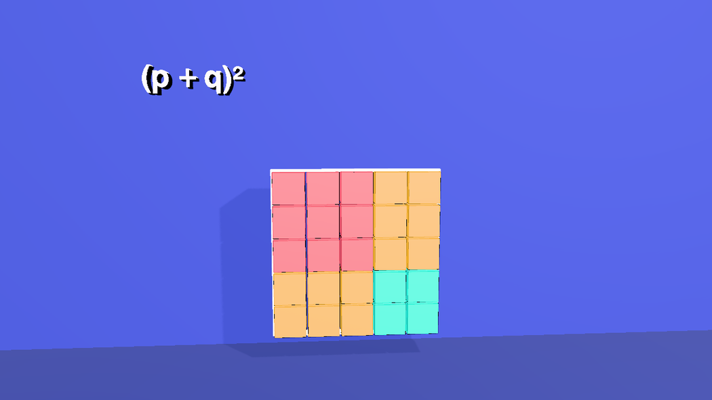
$S('.piece') returns the four groups and their tiles, and each tile's black border besides, so the count at the end of the block filters by name. This is the same thing the Pythagorean short's note about .cube says; here it matters whenever a verb is applied to a class: .fade on .piece would fade the tiles one by one, which is what you want for a glass effect but not for a move.4 The outline, the rulers and the cuts
Four thin white bars mark the outline of the whole square; it is what the pieces come from and go back to, and it stays behind, faint, while they are apart. Along the top and down the left side, two rulers show how each side splits: p in coral, the colour of A, and q in aqua, the colour of a; they use the coral and aqua materials of the tiles. The two cuts are thin white bars that are a little proud of the tiles, so they read as lines drawn across the square. Rulers and cuts start at scale 0.001 on every axis (invisible) and grow when their moment comes: because they share a material with other objects, they cannot be faded one at a time.
// the outline of the whole square (what the pieces come from and go back to), and the rulers along its top and left side:
// p in coral (the colour of A), q in aqua (the colour of a)
// materials are shared: the frame has its own (it fades as a whole); the rulers use the coral and aqua of the pieces; the cuts and
// all white text share one white. Nothing that shares a material fades on its own: rulers and cuts grow and shrink instead.
globalThis.PAL.frame = new MeshStandardMaterial({ color: 0xffffff, emissive: 0xffffff, emissiveIntensity: 0.9 });
globalThis.PAL.white = new MeshStandardMaterial({ color: 0xffffff, emissive: 0xffffff, emissiveIntensity: 0.7 });
const bar = (w, h, d, x, y, z, material, name) => {
const m = new Mesh(new BoxGeometry(w, h, d), material);
m.name = name;
m.position.set(x, y, z);
return m;
};
const frame = new Group();
frame.name = 'Frame';
const t = 0.07, h = 2.5;
for (const y of [-h, h]) frame.add(bar(5 + t, t, 0.3, 0, y, 0, PAL.frame, 'FrameEdge'));
for (const x of [-h, h]) frame.add(bar(t, 5 + t, 0.3, x, 0, 0, PAL.frame, 'FrameEdge'));
editor.execute(new AddObjectCommand(editor, frame));
$S('#Frame > *').addClass('frameedge');
// rulers start collapsed (scale 0.001 on every axis, so nothing is left to see) and grow out of their middles
const ruler = (w, h, x, y, material, name) => {
const m = bar(w, h, 0.22, x, y, 0.3, material, name);
m.scale.setScalar(0.001);
editor.execute(new AddObjectCommand(editor, m));
};
ruler(3 - 0.08, 0.2, -1, 3.05, PAL.coral, 'RulerTopP'); // along the top: p, then q
ruler(2 - 0.08, 0.2, 1.5, 3.05, PAL.aqua, 'RulerTopQ');
ruler(0.2, 3 - 0.08, -3.05, 1, PAL.coral, 'RulerSideP'); // down the left side: p, then q
ruler(0.2, 2 - 0.08, -3.05, -1.5, PAL.aqua, 'RulerSideQ');
$S('#RulerTopP, #RulerTopQ').addClass('rulertop');
$S('#RulerSideP, #RulerSideQ').addClass('rulerside');
// the two cuts, where each side splits into p and q: thin, bright, a little proud of the tiles; collapsed until their moment
const cutV = bar(0.09, 5.6, 0.6, 0.5, 0, 0.6, PAL.white, 'CutV'); cutV.scale.setScalar(0.001);
const cutH = bar(5.6, 0.09, 0.6, 0, -0.5, 0.6, PAL.white, 'CutH'); cutH.scale.setScalar(0.001);
editor.execute(new AddObjectCommand(editor, cutV));
editor.execute(new AddObjectCommand(editor, cutH));
$S('#CutV, #CutH').addClass('cut');5 Five cameras
A shot camera is an ordinary camera with a track of keys: setKeys([{ t, pos, lookAt }, …], { smooth: true }) plays one smooth curve through them (see Editing camera moves). orbit writes the keys from an azimuth, a radius and a height. Because this scene is flat, the cameras stay nearly head-on (azimuth within ±8°): a square seen from the side is a sliver, and the equation above it, a row of text that faces the front, would shrink. Each is aimed a little above the middle of what it films. The second one is further back and aimed lower, because during the sort the pieces fly up towards the equation. The third is closer and aimed to the right of the middle, for the allele count, so that the list of assumptions has room beside the bins; the fourth pulls back for the finished square, and the fifth faces the end card.
// five cameras: a slow push-in on the whole square, a closer one for the sorting, one for the allele count, a wide one for the reassembly, and one for the end card
function addCamera(name, fov) {
const cam = new THREE.PerspectiveCamera(fov, 16 / 9, 0.1, 400);
cam.name = name;
editor.execute(new AddObjectCommand(editor, cam));
return cam;
}
// a move around a point: azimuth in degrees (0 = straight in front), a radius and a height, one key every `step` seconds
function orbit(cam, t0, t1, az0, az1, radius, y0, y1, aim, step = 4) {
const n = Math.max(1, Math.round((t1 - t0) / step));
const keys = [];
for (let i = 0; i <= n; i++) {
const u = i / n, az = THREE.MathUtils.degToRad(az0 + (az1 - az0) * u);
keys.push({ t: t0 + (t1 - t0) * u, pos: [radius * Math.sin(az), y0 + (y1 - y0) * u, radius * Math.cos(az)], lookAt: aim });
}
$S('#' + cam.name).setKeys(keys, { smooth: true });
cam.position.set(...keys[0].pos); // where the camera waits before its move starts
cam.lookAt(...aim);
}
const camA = addCamera('camA', 40), camB = addCamera('camB', 40), camC = addCamera('camC', 40), camD = addCamera('camD', 40), end = addCamera('camCard', 50);
orbit(camA, 0.001, 29.5, -5, 6, 16.5, 3.5, 3, [0, 1.6, 0]); // a little push round, nearly head-on
orbit(camB, 29.5, 51.5, 6, -6, 18, 2.5, 2, [0.3, 0.9, 0]); // further back and aimed lower: the pieces fly apart, then up to the row
orbit(camC, 51.5, 89.9, -6, 4, 14.5, 2.6, 2.8, [1.8, 1.4, 0], 6); // closer, and aimed to the right, for the allele count and the list of assumptions beside it
orbit(camD, 89.9, 111.9, -2, 6, 16.5, 3, 4, [0, 1.6, 0], 6); // pulls back for the whole square again
end.position.set(14.6, 0.5, 0); // faces the end card, which hangs on the right-hand wall
end.lookAt(30, 0.5, 0);6 The labels
Open Stencils → Mesh → Text and click it once; the next block copies that one label for every other, so they all share its font, and gives each the shared material of its colour (white, coral, gold or aqua) instead of a copy of its own. A label's text starts at the label's own origin, so to centre a label you subtract half its width. The widths come from the font: the sum of its glyphs' advances, in units of the font size, times the label's scale.
| Text | Width | Text | Width |
|---|---|---|---|
| (p + q)² | 4.77 | 2pq | 2.49 |
| = + 1 | 0.83 each | q² | 1.39 |
| p² | 1.38 | AA · Aa · aa | 2.14 · 1.86 · 1.57 |
At a scale of 0.6 and a gap of 0.45 between nine labels the equation is 12.1 wide, so its first label starts at −6.05, and each next one at the sum of the widths and gaps before it. The letters on the pieces are children of their piece (parent.add(label)), so they travel, shrink and turn with it.
// every label is a copy of the one Text stencil, so they share its font; they also share a material per colour, so the labels appear
// with a cut (and the cross-fade is left out), because a shared material cannot fade one label without fading them all. A label's text begins at its own origin, so to
// centre one you subtract half its width: the widths come from the font, in units of the font size (see the table below).
const tpl = $S('#Text').nodes[0];
const WHITE = PAL.white, CORAL = PAL.coral, GOLD = PAL.gold, AQUA = PAL.aqua; // shared materials, one per colour
let first = true;
function label(name, material, x, y, z, scale, parent) {
const m = first ? tpl : new Mesh(tpl.geometry.clone(), material);
m.name = name;
m.material = material;
m.scale.setScalar(scale);
m.position.set(x, y, z);
m.userData.textShadow = true;
m.castShadow = false;
if (!first) editor.execute(new AddObjectCommand(editor, m));
first = false;
if (parent) parent.add(m); // hang it on a piece, so it travels with it
return m;
}
// the equation, nine labels in a row, at scale 0.6 with 0.45 between them: (p + q)^2 = p^2 + 2pq + q^2 = 1
const EQ = [['lead', WHITE, -6.05], ['eq1', WHITE, -2.74], ['tP', CORAL, -1.79], ['pl1', WHITE, -0.51], ['tPQ', GOLD, 0.43],
['pl2', WHITE, 2.37], ['tQ', AQUA, 3.32], ['eq2', WHITE, 4.61], ['one', WHITE, 5.55]];
for (const [name, color, x] of EQ) label(name, color, x, 4.9, 0, 0.6);
// the letters on the rulers: p and q, centred over and beside their bars
label('rp1', CORAL, -1.29, 3.4, 0.3, 0.7); label('rq1', AQUA, 1.21, 3.4, 0.3, 0.7); // over the top ruler
label('rp2', CORAL, -3.85, 0.75, 0.3, 0.7); label('rq2', AQUA, -3.85, -1.75, 0.3, 0.7); // beside the left one
$S('#rp1, #rq1, #rp2, #rq2').addClass('ruler');
// the kind of child, on each piece: AA, Aa, Aa and aa, centred on the piece (half the width back, a third of the cap height down)
// (ids are matched without regard to case, so '#kAA' and '#kaa' would be the same label: the names say where, not what)
const kids = [['kidPP', 'g-pp', -0.96], ['kidPQ1', 'g-pq1', -0.83], ['kidPQ2', 'g-pq2', -0.83], ['kidQQ', 'g-qq', -0.71]];
for (const [name, group, x] of kids) label(name, WHITE, x, -0.32, 0.6, 0.9, $S('#' + group).nodes[0]);
$S('#kidPP, #kidPQ1, #kidPQ2, #kidQQ').addClass('kid');
$S('#lead, #eq1, #tP, #pl1, #tPQ, #pl2, #tQ, #eq2, #one').addClass('term').nodes.length // 9change(text) with no transition) and rulers and cuts grow instead of fading. The other rule is that every event for one object goes through one selector: .rulertop and #RulerTopP would both write the same scale track, and the ruler would drift to the wrong size.kAA and another called kaa are the same id to the selector engine, so one of them is silently left out of any set that names both. The first version of this scene did exactly that, and it showed aa on the coral piece. Name labels for where they are (kidPP, kidQQ), never for what they say.7 The end card
Open Stencils → Mesh → Call card and click it. This block makes it landscape, hangs it on the right-hand wall (x = 30), turns it to face the end camera and makes it invisible until its fade-in.
// the end card: the Call card stencil, landscape, hung on the right-hand wall and facing the end camera
const card = $S('#callcard').nodes[0];
card.userData.width = 3.2;
card.userData.height = 1.8;
card.geometry = new PlaneGeometry(3.2, 1.8);
$S('#callcard').moveTo(30, 0.5, 0).scaleTo(8);
card.rotation.set(0, -Math.PI / 2, 0);
card.material.opacity = 0;8 The camera sequence
The Render tab's Camera Sequence lives in scene.userData.renderShots: a camera and the time it takes over, entered with a 'cut' or a 'fade'. In the Render tab it is + Add Shot five times; from the Shell it is one assignment, and editor.work.touch() tells the unsaved-work guard that the scene changed.
// the camera sequence: which camera takes over when, and how (a cross-fade into every shot but the first)
const cams = Object.fromEntries(['camA', 'camB', 'camC', 'camD', 'camCard'].map(n => [n, $S('#' + n).nodes[0]]));
const cuts = [[0, 'camA'], [29.5, 'camB'], [51.5, 'camC'], [89.9, 'camD'], [111.9, 'camCard']];
editor.scene.userData.renderShots = cuts.map(([at, name], i) => ({
id: 'shot-' + name, at, camera: cams[name].uuid, transition: i === 0 ? 'cut' : 'fade', transitionDur: 0.6
}));
editor.work.touch();
editor.scene.userData.renderShots.length // 59 The rulers and the cuts
The voice introduces p and q twice, once for each parent, so the ruler appears twice: along the top at 8.2 s (p, then q, as the voice says "p plus q is one") and down the side at 17.8 s (when "one parent's alleles" becomes "the other's"). The two cuts slide in at 25.9 and 26.6 s, a second after "cut where each side splits", and rulers and cuts shrink away as the square comes apart at 29.4 s. After that the two top rulers have one more job (step 12), so they are moved out to the sides while they are invisible (at 30.2 s, by a 50 ms move) to be ready. Every ruler letter is its own track (#rp1, #rq1, …): two change events from two different selectors on one label would fight.
// the rulers: p and q along the top as the voice says they make one; down the side when the other parent comes in.
// A ruler grows out of its middle (they share materials with the pieces, so they cannot fade on their own).
// (every event of one ruler goes through one selector, its own id: two selectors on one object would both write its scale track)
const grow = (sel, at, to, dur = 700) => $S(sel).at(at).animate({ to: { scaleX: to, scaleY: to, scaleZ: to } }, dur, to > 0.5 ? 'ease-out' : 'ease-in');
const TOP = ['#RulerTopP', '#RulerTopQ'];
TOP.forEach(s => grow(s, 8.2, 1, 800));
['#rp1', '#rq1', '#rp2', '#rq2'].forEach(s => $S(s).at(0).change('')); // one track per label: two tracks on one label fight
$S('#rp1').at(8.6).change('p');
$S('#rq1').at(9.1).change('q');
grow('.rulerside', 17.8, 1, 800);
$S('#rp2').at(18.2).change('p');
$S('#rq2').at(18.7).change('q');
// the two cuts slide in where each side splits, one after the other, and go with the rulers
grow('#CutV', 25.9, 1, 500);
grow('#CutH', 26.6, 1, 500);
grow('#CutV', 29.4, 0.001, 500);
grow('#CutH', 29.4, 0.001, 500);
TOP.forEach(s => grow(s, 29.4, 0.001, 600));
grow('.rulerside', 29.4, 0.001, 600);
['#rp1', '#rq1', '#rp2', '#rq2'].forEach(s => $S(s).at(29.4).change(''));
// the whole square stays behind as a faint outline while the pieces are apart
$S('.frameedge').at(29.6).fade(1, 0.25, 0.6);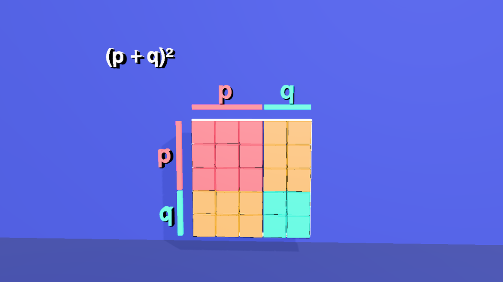
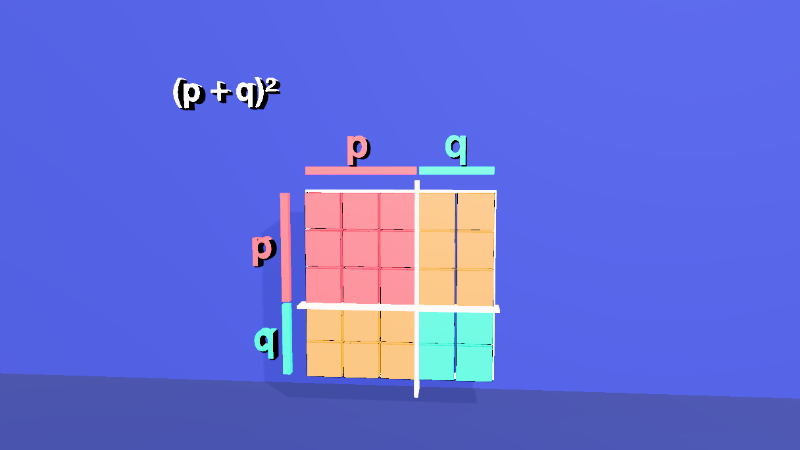
10 The square falls apart, and the pieces sort themselves
At 29.8 s each piece steps a little away from the middle (APART), so that the four are separate and can be named. The voice then names each one and the labels come in: AA, Aa, Aa, aa. Then, as each term of the equation appears, its piece flies to a spot under it and shrinks to 42% (scaleX/Y/Z are absolute). The two gold pieces are the interesting part: they fly under 2pq together, one above the other, so that the middle term looks like what it is, two pieces. The tall one turns a quarter turn (rotateZ: 90) to lie like the other, and its label turns the other way (-90) so that the letters stay upright. After the allele count (the next-but-one step) everything flies back, at 90.1 s, the turned piece turns back, and the square is whole.
// the pieces step apart, then each kind flies to its place under its own term of the equation, smaller (scale 0.42),
// and the two Aa rectangles are stacked: the one that is q wide and p tall turns a quarter turn to lie like the other.
// Positions are in the world, the pieces' groups sit at their middles.
const S = 0.42;
const APART = { 'g-pp': [-1.2, 1.2], 'g-pq1': [1.2, 1.2], 'g-pq2': [-1.2, -1.2], 'g-qq': [1.2, -1.2] }; // a step away from the middle
const HOME = { 'g-pp': [-1, 1], 'g-pq1': [1.5, 1], 'g-pq2': [-1, -1.5], 'g-qq': [1.5, -1.5] };
const ROW = { 'g-pp': [-1.37, 2.2], 'g-pq1': [1.18, 2.65], 'g-pq2': [1.18, 1.75], 'g-qq': [3.74, 2.2] }; // under p^2, 2pq (two, stacked) and q^2
for (const [name, [dx, dy]] of Object.entries(APART)) {
const [x, y] = HOME[name];
$S('#' + name).at(29.8).animate({ to: { positionX: x + dx, positionY: y + dy } }, 2200, 'ease-out');
}
const fly = (name, at, spin) => {
const [x, y] = ROW[name];
$S('#' + name).at(at).animate({ to: { positionX: x, positionY: y, scaleX: S, scaleY: S, scaleZ: S } }, 1800, 'ease-in-out');
if (spin) { // a quarter turn, and the letters on it turn back so they stay upright
$S('#' + name).at(at).animate({ to: { rotateZ: 90 } }, 1800, 'ease-in-out');
$S('#' + name + ' > .kid').at(at).animate({ to: { rotateZ: -90 } }, 1800, 'ease-in-out');
}
};
fly('g-pp', 35.9);
fly('g-pq1', 40.8, true); fly('g-pq2', 41.4);
fly('g-qq', 47.3);
// and back (after the allele count, below): the whole square again, pieces full size, the turned one turned back
const back = (name, at, spin) => {
const [x, y] = HOME[name];
$S('#' + name).at(at).animate({ to: { positionX: x, positionY: y, scaleX: 1, scaleY: 1, scaleZ: 1 } }, 2400, 'ease-in-out');
if (spin) {
$S('#' + name).at(at).animate({ to: { rotateZ: -90 } }, 2400, 'ease-in-out');
$S('#' + name + ' > .kid').at(at).animate({ to: { rotateZ: 90 } }, 2400, 'ease-in-out');
}
};
const BACK = 90.1;
Object.keys(HOME).forEach(n => back(n, BACK, n === 'g-pq1'));
$S('.frameedge').at(BACK).fade(0.25, 1, 0.8);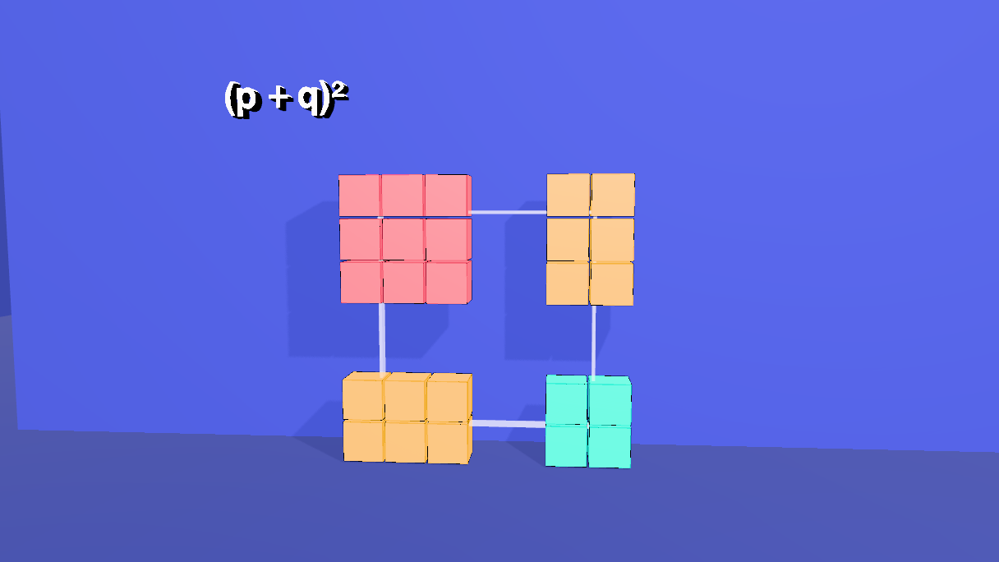
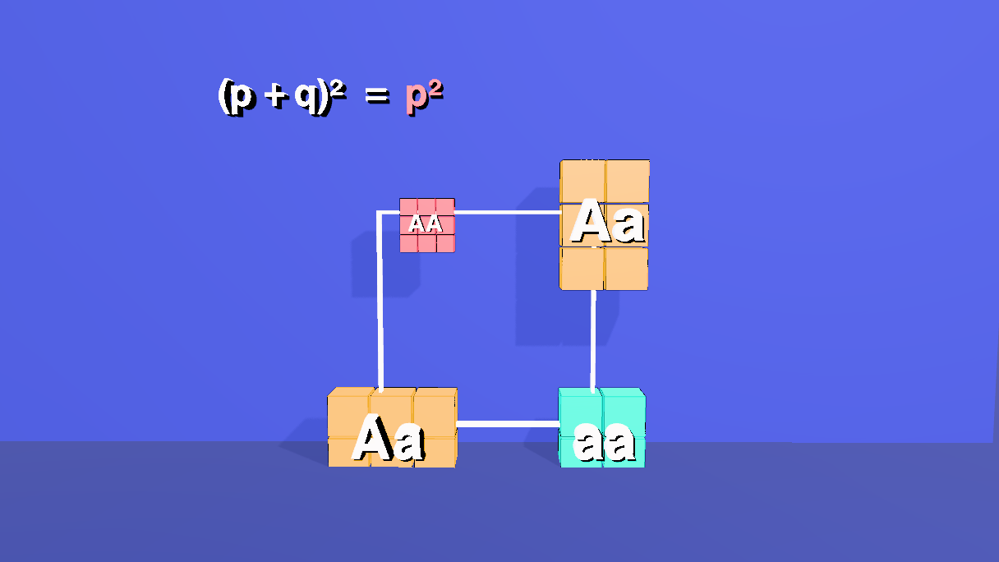
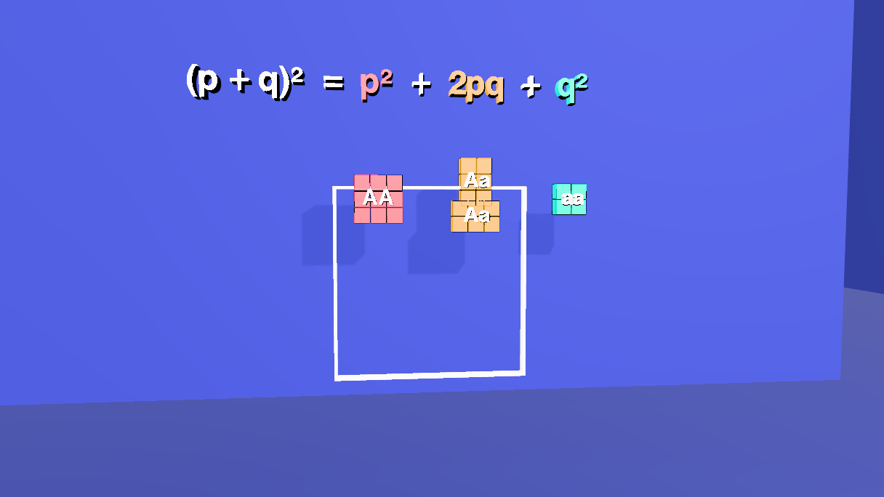
11 The equation grows
The nine labels start empty and each gets its text at the moment its piece flies, with a cut; the letters on the pieces come in as the voice names each kind of child. The last two labels, = and 1, come at 95.8 s, once the square is whole again, and that is the only digit written on screen. The end card fades in at 112.1 s as the last camera arrives (it has a material of its own: it is the one object that fades).
// the equation grows with the pieces; the letters on the pieces appear when the voice says each is a kind of child
const show = (sel, at, text) => $S(sel).at(at).change(text);
$S('.term').at(0).change('');
$S('.kid').at(0).change('');
show('#lead', 0.8, '(p + q)²');
['#kidPP', '#kidPQ1', '#kidPQ2', '#kidQQ'].forEach((s, i) => show(s, 31.6 + 0.25 * i, ['AA', 'Aa', 'Aa', 'aa'][i]));
show('#eq1', 35.9, '='); show('#tP', 35.9, 'p²');
show('#pl1', 40.8, '+'); show('#tPQ', 40.8, '2pq');
show('#pl2', 47.3, '+'); show('#tQ', 47.3, 'q²');
show('#eq2', 95.8, '='); show('#one', 95.8, '1');
// the end card fades in as the last camera arrives
$S('#callcard').at(112.1).fadeIn(2.5);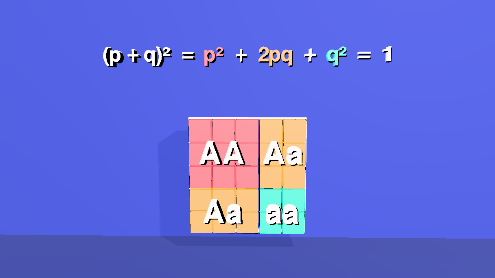
12 The allele count
This is the beat that turns the square into the law. The square has shown how often each kind of child occurs; it has not shown that the alleles A and a are as common in the children as in the parents. To show it, count them. There are 25 children (the 25 tiles), and each carries two alleles, so each tile hands out two little cubes: AA two coral, aa two aqua, Aa one of each. The cubes are coloured by allele, not by genotype: a gold tile hands out one coral and one aqua cube. They stream into two bins, and the arithmetic is in the code's comment: 18 + 12 = 30 A and 12 + 8 = 20 a.
The count is a measurement, not a line of arithmetic. A cube is 0.42 wide on a pitch of 0.5, so a row of six is 2.92 long and a row of four is 1.92, the exact lengths of the two rulers that measured the parents (3 − 0.08 and 2 − 0.08). The A bin has six columns of five, the a bin four columns of five. Then RulerTopP and RulerTopQ, the very objects of step 4, slide in from the sides and lie over the bins; they match to the last digit. The ruler that measured the parents measures the children. The two labels p′ and q′ turn into p′ = p and q′ = q, and the frame is held while the voice lists the assumptions on the right.
Everything for the count hangs on one group, Counting (the bins, the 50 cubes and the two labels), so that it can be shrunk away in one move before the pieces fly back. The cubes start at the middle of the piece they come from, invisible, and fly to their slots. Each cube's slot is the next free one in its bin, filled from the bottom, six to a row for A and four for a.
// the allele count: the equilibrium itself. After the four kinds of child are sorted under the equation, each child gives up its two
// alleles: 50 small cubes, coloured by ALLELE (A coral, a aqua), not by genotype. They stream into two bins; and the same two rulers
// that measured the parents (p along the top, q along the top) are brought across to measure the bins.
// AA 9 children -> 18 A Aa 12 children -> 12 A + 12 a aa 4 children -> 8 a total 30 A, 20 a
// The token is 0.42 on a 0.5 pitch, so a bin of 6 columns is 2.92 wide (the length of the p ruler) and a bin of 4 is 1.92 (the q ruler).
const COUNTING = [0, -1.25, 0]; // the group that holds the bins, the tokens and the labels
const group = new Group();
group.name = 'Counting';
group.position.set(...COUNTING);
// two bins: a floor and two walls each, in the shared white, centred at x = -1.2 (A, 3 wide) and x = 1.7 (a, 2 wide), growing in from nothing
const bin = (name, cx, w) => {
const g = new Group();
g.name = name;
g.position.set(cx, 0, 0);
g.scale.setScalar(0.001);
const part = (pw, ph, x, y) => { const m = new Mesh(new BoxGeometry(pw, ph, 0.5), PAL.white); m.position.set(x, y, 0.2); m.castShadow = true; g.add(m); };
part(w + 0.22, 0.08, 0, -1.29); // floor
part(0.08, 2.62, -(w / 2 + 0.07), 0); // walls
part(0.08, 2.62, w / 2 + 0.07, 0);
group.add(g);
};
bin('binBigA', -1.2, 3);
bin('binLittleA', 1.7, 2);
// where a token starts (the middle of the piece it comes from, in the row under the equation) and where it ends (the next free slot)
const SOURCE = { 'g-pp': [-1.37, 2.2], 'g-pq1': [1.18, 2.65], 'g-pq2': [1.18, 1.75], 'g-qq': [3.74, 2.2] };
const slot = { A: { n: 0, cols: 6, x0: -2.45 }, a: { n: 0, cols: 4, x0: 0.95 } };
const tokenGeometry = new BoxGeometry(0.42, 0.42, 0.42);
const plan = []; // [source, allele, time]
const emit = (source, alleles, t0, step) => alleles.forEach((al, k) => plan.push([source, al, t0 + step * k]));
emit('g-pp', Array(18).fill('A'), 53.4, 0.2); // AA: two A each
emit('g-pq1', Array(12).fill(0).map((_, k) => k % 2 ? 'a' : 'A'), 57.9, 0.17); // Aa: one of each
emit('g-pq2', Array(12).fill(0).map((_, k) => k % 2 ? 'a' : 'A'), 60.0, 0.17);
emit('g-qq', Array(8).fill('a'), 62.7, 0.17); // aa: two a each
const flights = [];
plan.forEach(([source, al, t], i) => {
const s = slot[al], n = s.n++;
const x = s.x0 + 0.5 * (n % s.cols), y = -2.25 + 0.5 * Math.floor(n / s.cols) + 1.25; // y is in the group, which sits 1.25 below the origin
const token = new Mesh(tokenGeometry, al === 'A' ? PAL.coral : PAL.aqua);
token.name = 'alleleToken_' + String(i + 1).padStart(2, '0'); // a '.' in a name would read as a class, so an underscore
token.position.set(SOURCE[source][0], SOURCE[source][1] - COUNTING[1], 0.2);
token.scale.setScalar(0.001);
token.castShadow = token.receiveShadow = true;
token.userData.hasEdgeOutline = true;
group.add(token);
flights.push([token.name, al, t, x, y]);
});
// the labels p' and q' above the bins, each in the colour of its allele, starting empty
const stencil = $S('#lead').nodes[0];
const tag = (name, material, x, y) => {
const m = new Mesh(stencil.geometry.clone(), material);
m.name = name;
m.scale.setScalar(0.5);
m.position.set(x, y - COUNTING[1], 0.3);
m.userData.textShadow = true;
m.castShadow = false;
group.add(m);
};
tag('pPrime', PAL.coral, -2.66, 0.62);
tag('qPrime', PAL.aqua, 0.74, 0.62);
editor.execute(new AddObjectCommand(editor, group));
for (const [name, al] of flights) $S('#' + name).addClass('allele').addClass(al === 'A' ? 'bigA' : 'littleA');
// the assumptions, as the voice names them, down the right-hand side
const assume = [['Assumptions', PAL.gold, 82.7], ['random mating', PAL.white, 83.4], ['no selection', PAL.white, 84.6], ['no mutation', PAL.white, 85.7],
['no migration', PAL.white, 86.7], ['large population', PAL.white, 88.0]];
const names = [];
assume.forEach(([text, material, t], i) => {
const m = new Mesh(stencil.geometry.clone(), material);
m.name = 'assume_' + (i + 1);
m.scale.setScalar(0.5);
m.position.set(4.7, 2.9 - 0.7 * i, 0.3);
m.userData.textShadow = true;
m.castShadow = false;
editor.execute(new AddObjectCommand(editor, m));
names.push(m.name);
});
names.forEach(n => $S('#' + n).at(0).change(''));
assume.forEach(([text, , t], i) => $S('#' + names[i]).at(t).change(text));
names.forEach(n => $S('#' + n).at(89.9).change(''));
$S('#pPrime').at(0).change(''); $S('#qPrime').at(0).change('');
// ---- the film of it ----
$S('#binBigA').at(52.0).animate({ to: { scaleX: 1, scaleY: 1, scaleZ: 1 } }, 600, 'ease-out');
$S('#binLittleA').at(52.4).animate({ to: { scaleX: 1, scaleY: 1, scaleZ: 1 } }, 600, 'ease-out');
for (const [name, , t, x, y] of flights)
$S('#' + name).at(t).animate({ to: { positionX: x, positionY: y, positionZ: 0.2, scaleX: 1, scaleY: 1, scaleZ: 1 } }, 700, 'ease-out');
// the two top rulers wait off to the sides (while they are collapsed), then slide across and grow to measure the bins
$S('#RulerTopP').at(30.2).animate({ to: { positionX: -9, positionY: 0.3 } }, 50, 'linear');
$S('#RulerTopQ').at(30.2).animate({ to: { positionX: 9, positionY: 0.3 } }, 50, 'linear');
$S('#RulerTopP').at(67.9).animate({ to: { positionX: -1.2, positionY: 0.3, scaleX: 1, scaleY: 1, scaleZ: 1 } }, 1500, 'ease-out');
$S('#RulerTopQ').at(67.9).animate({ to: { positionX: 1.7, positionY: 0.3, scaleX: 1, scaleY: 1, scaleZ: 1 } }, 1500, 'ease-out');
$S('#pPrime').at(71.4).change("p'"); $S('#qPrime').at(72.0).change("q'");
$S('#pPrime').at(74.5).change("p' = p"); $S('#qPrime').at(74.9).change("q' = q");
// and away again before the pieces go back together
['#RulerTopP', '#RulerTopQ'].forEach(r => $S(r).at(89.9).animate({ to: { scaleX: 0.001, scaleY: 0.001, scaleZ: 0.001 } }, 600, 'ease-in'));
$S('#Counting').at(89.9).animate({ to: { scaleX: 0.001, scaleY: 0.001, scaleZ: 0.001 } }, 600, 'ease-in');
flights.length // 50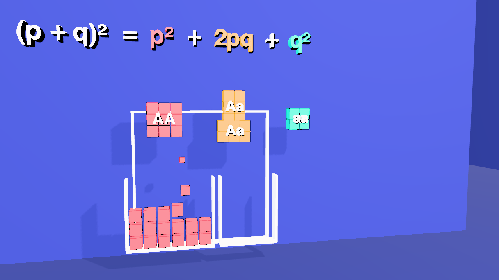
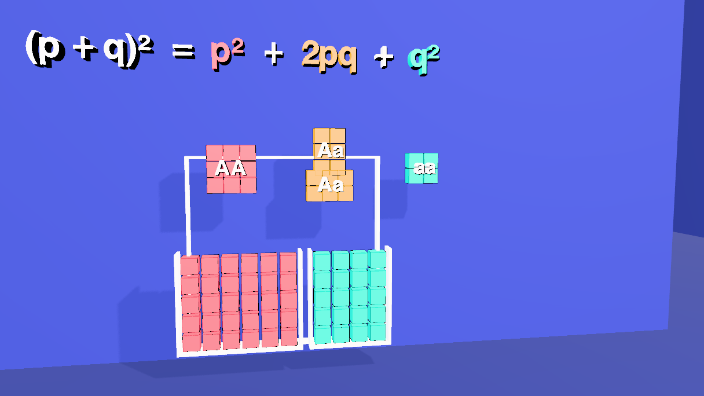
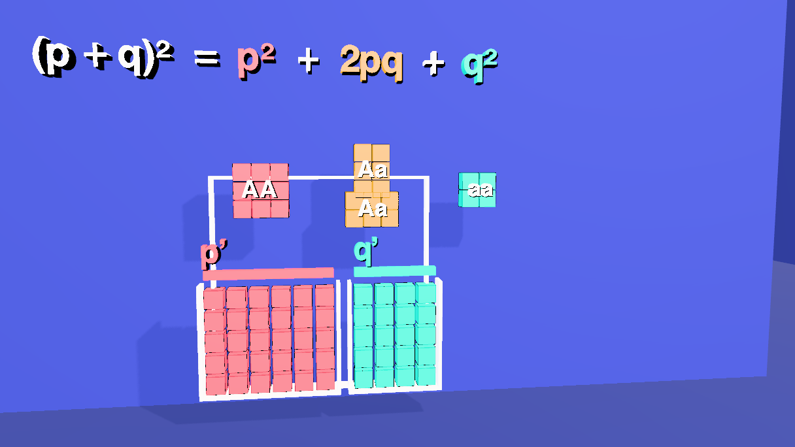
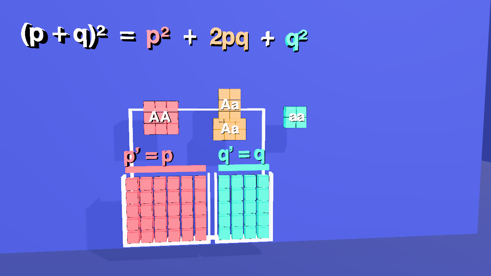
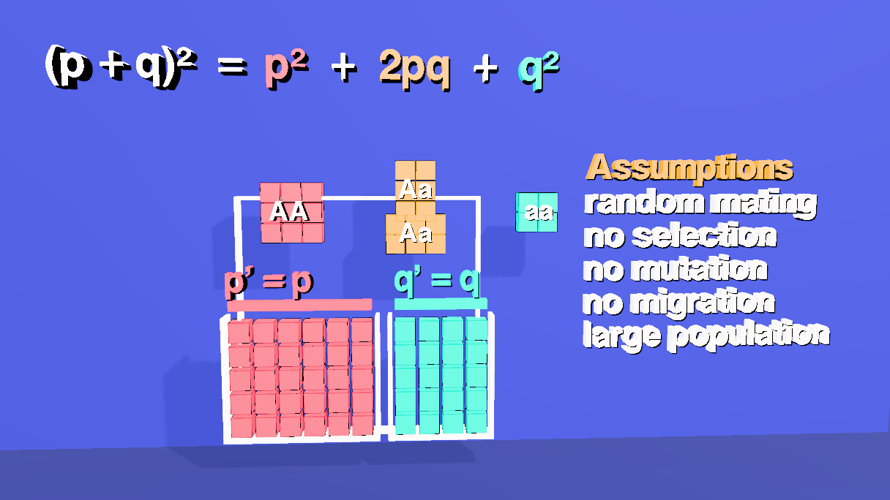
alleleToken_01 to alleleToken_50 (underscores: a . in an id reads as a class), and carry the classes allele with bigA or littleA; the bins are binBigA and binLittleA. Ids and classes are matched without regard to case, so binA and bina, or classes A and a, would be one and the same.13 Subtitles
Nineteen cues, kept on the scene (scene.userData.renderSubtitles) like the other shorts. They are written to be read aloud: no digits, no symbols (p squared, two p q). Six of them are the allele count and its assumptions, and the last but one says what the film has shown: that p and q stay fixed, so the proportions return.
setSubtitles([
{ start: 0.8, end: 8.02, text: 'A gene comes in two forms. Big A has frequency p.\nLittle a has frequency q.' },
{ start: 8.17, end: 12.69, text: 'Between them they make up everything:\np plus q is one.' },
{ start: 12.84, end: 17.56, text: 'Every child gets one allele from each parent,\nat random.' },
{ start: 17.71, end: 25.66, text: 'So draw a square. Along the top, one parent\'s alleles.\nDown the side, the other\'s.' },
{ start: 25.81, end: 29.44, text: 'Cut where each side splits\ninto p and q.' },
{ start: 29.59, end: 35.44, text: 'Each piece is one kind of child, and its area\nis how common that kind is.' },
{ start: 35.59, end: 40.34, text: 'Both parents give A: p times p.\nThat is p squared.' },
{ start: 40.49, end: 46.79, text: 'One gives A and the other gives a. There are two ways,\nso two rectangles: two p q.' },
{ start: 46.94, end: 51.44, text: 'Both give little a: q times q.\nThat is q squared.' },
{ start: 51.59, end: 57.77, text: 'Now count the alleles in all these children.\nEach child carries two.' },
{ start: 57.92, end: 62.42, text: 'Send every A to one bin,\nand every little a to the other.' },
{ start: 62.57, end: 67.12, text: 'Out of fifty alleles, thirty are A,\nand twenty are little a.' },
{ start: 67.27, end: 73.77, text: 'Measure the bins with the same two rulers that\nmeasured the parents: p, and q. They match.' },
{ start: 73.92, end: 81.42, text: 'The allele frequencies have not changed.\nRandom mating only shuffles them into new pairs.' },
{ start: 81.57, end: 89.82, text: 'That holds when mating is random, with no selection,\nno mutation, no migration, and a large population.' },
{ start: 89.97, end: 97.07, text: 'Put the pieces back together: the whole square,\nthe whole population. Area one.' },
{ start: 97.22, end: 102.47, text: 'So p squared, plus two p q, plus q squared,\nequals one.' },
{ start: 102.62, end: 111.82, text: 'That is the Hardy-Weinberg equilibrium: p and q stay fixed,\nso these proportions return, generation after generation.' },
{ start: 111.97, end: 114.47, text: 'Made with Strata.' },
]).length // 1914 Render it
- Open the Render tab. The Camera Sequence already holds the five shots from step 8.
- Pick 1280 × 720 and 30 fps, and click Render & Export. It runs in real time, so about two minutes. Tick Hard-burn to draw the subtitles into the picture, and keep Also export a matching .srt.
- For captions a viewer can switch off, render without the burn and add the .srt as a soft track afterwards:
ffmpeg -i film.mp4 -i film.srt -c copy -c:s mov_text -metadata:s:s:0 language=eng film-subs.mp4.
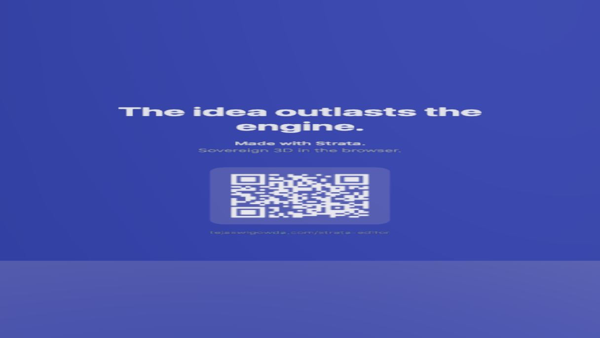
15 Open the finished scene
hw.json in tejaswigowda/test1 is the scene these blocks build: 4 groups of 25 tiles, the outline, 4 rulers and 4 ruler letters, 2 cuts, 9 equation labels, 4 piece labels, the allele count (50 tokens, 2 bins, p′ and q′), 6 assumption labels, 5 cameras and the end card, with 96 timeline tracks, 5 shots, 19 subtitle cues and 9 materials. Open it, then scrub the Animations tab: at 3 s the square is whole, at 31 s it is in four pieces, at 50 s each kind is under its term, at 65 s the two bins are full, at 73 s the rulers measure them, at 99 s the square is whole again, and from 112 s the card fills the frame.
RulerTopP and RulerTopQ to the last digit. The screenshots on this page are frames of the loaded scene at 2, 20, 27, 31, 38, 50, 57, 65, 73, 77, 89, 99 and 114 s, with the editor's controls hidden. The cues were run through a speech synthesizer and fit, with no collisions. Rendering to a video file (step 14) was not run for this page. The scene was built with the WebGPU renderer; the film this page describes is what that renderer plays, and what a different renderer or an exported glTF would show is not claimed here.main for hours, so a link by branch name can keep playing the version before the latest push: a reader would see a scene that does not match this page. The link above names the commit (@89f9272) instead, which never goes stale. The "Open it" link at the top of this step reads the branch head fresh. When the scene is republished, move the commit in the player's address.16 Name and class everything
This scene was first published before every object had to be named and classed, so this last block was added afterwards; paste it after all the others. The film is only addressable if every object has a name an author chose and at least one class: otherwise $S('#id'), $S('.class'), an AI edit or a tutorial step cannot reach it. The block names the few objects the build left anonymous or shared (from where they sit), gives every object its classes from one table, and calls requireLabels(true): from then on a commit is refused while any object is unnamed, duplicated or without a class, and lint() lists what is wrong. The four frame bars are now FrameEdgeBottom, FrameEdgeTop, FrameEdgeLeft and FrameEdgeRight, and each bin's three boxes binBigA_floor, _left, _right (and the same for binLittleA); $S('.frameedge') still selects the bars because the table gives each of them that class.
// Names and classes for the whole scene. Every object gets an author name (the ones the build left anonymous or shared are named here, from where they sit)
// and a class; classes are what make the scene queryable: $S('.tile'), $S('.bin'), $S('.label'). The table's first column is the names it covers, the second the classes it gives;
// an object can match several rows, and anything left without a class is listed and the block stops.
for (const e of scene.getObjectByName('Frame').children) { // the four frame bars, named by the side they are on
const p = e.position;
e.name = 'FrameEdge' + (Math.abs(p.x) > Math.abs(p.y) ? (p.x < 0 ? 'Left' : 'Right') : (p.y < 0 ? 'Bottom' : 'Top'));
}
for (const bin of ['binBigA', 'binLittleA']) { // each bin's three boxes: a floor and two sides
for (const m of scene.getObjectByName(bin).children) {
if (m.name) continue;
m.name = bin + (m.position.y < -1 ? '_floor' : m.position.x < 0 ? '_left' : '_right');
}
}
const rules = [
[/^(Room|Wall|Floor)$/, ['environment']], [/Light$/, ['light']], [/^g-(pp|pq1|pq2|qq)\.\d+\.\d+$/, ['tile']],
[/^Frame/, ['frame']], [/^FrameEdge/, ['frameedge']], [/^cam/, ['camera']], [/^callcard$/, ['card']],
[/^Counting$/, ['counting']], [/^bin/, ['bin']], [/^(pPrime|qPrime|assume_\d+)$/, ['label']]
];
const classesOf = c => Array.isArray(c) ? c : (c && typeof c === 'object') ? Object.values(c) : []; // older scenes stored an empty {} where a class list belongs
const left = [];
scene.traverse(o => {
if (o === scene || o.name.startsWith('__')) return;
const add = rules.filter(([re]) => re.test(o.name)).flatMap(([, c]) => c);
if (add.length === 0) { if (classesOf(o.userData.customClasses).length === 0) left.push(o.name || '(unnamed)'); return; }
o.userData.customClasses = [...new Set([...classesOf(o.userData.customClasses), ...add])];
});
if (left.length) throw new Error(left.length + ' objects have no class: ' + left.slice(0, 12).join(', '));
requireLabels(true) // from here on a commit is refused while anything is unnamed, duplicated or classlessrequireLabels, so a commit with an unnamed, duplicated or classless object is refused; lint() in the Shell lists any.